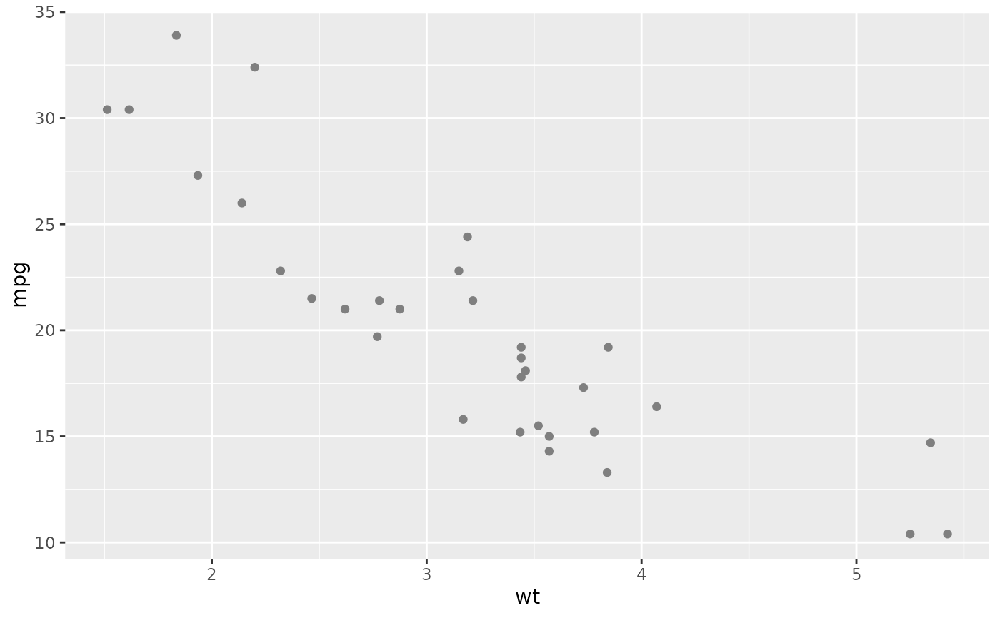

Nice Color Palettes with Contrasting Colors
nice_colors.RdReturns curated color palettes with contrasting colors for each main color. Each palette includes a main color and its contrasting color for optimal readability.
Arguments
- palette
Character. Name of the palette to return. Available palettes: "modern", "vibrant", "pastel", "professional", "nature", "sunset", "ocean", "newspaper". If NULL (default), returns all palettes.
- include_contrasts
Logical. If TRUE (default), includes contrasting colors. If FALSE, returns only main colors.
Value
A list containing color palettes. Each palette is a list with:
main: Named vector of main colors
contrast: Named vector of contrasting colors
description: Description of the palette
Examples
# Get all palettes
nice_colors()
#> $observable10
#> $observable10$main
#> blue orange red cyan green purple fuchsia
#> "#4269d0" "#efb118" "#ff725c" "#6cc5b0" "#3ca951" "#ff8ab7" "#a463f2"
#> brown gray light_gray
#> "#97bbf5" "#9c6b4e" "#9498a0"
#>
#> $observable10$description
#> [1] "The Observable 10 palette: A contemporary categorical color scheme designed for data visualization."
#>
#> $observable10$contrast
#> blue orange red cyan green purple fuchsia
#> "#FFFFFF" "#000000" "#000000" "#000000" "#FFFFFF" "#000000" "#000000"
#> brown gray light_gray
#> "#000000" "#FFFFFF" "#000000"
#>
#>
#> $retro_metro
#> $retro_metro$main
#> red pink orange yellow lime green grass blue
#> "#ea5545" "#f46a9b" "#ef9b20" "#edbf33" "#ede15b" "#bdcf32" "#87bc45" "#27aeef"
#> purple
#> "#b33dc6"
#>
#> $retro_metro$description
#> [1] "Retro Metro: A vibrant blend of lively and engaging colors."
#>
#> $retro_metro$contrast
#> red pink orange yellow lime green grass blue
#> "#000000" "#000000" "#000000" "#000000" "#000000" "#000000" "#000000" "#000000"
#> purple
#> "#FFFFFF"
#>
#>
#> $dutch_field
#> $dutch_field$main
#> red blue green yellow purple orange magenta
#> "#e60049" "#0bb4ff" "#50e991" "#e6d800" "#9b19f5" "#ffa300" "#dc0ab4"
#> light_blue teal
#> "#b3d4ff" "#00bfa0"
#>
#> $dutch_field$description
#> [1] "Dutch Field: Bold colors for a modern look that pops."
#>
#> $dutch_field$contrast
#> red blue green yellow purple orange magenta
#> "#FFFFFF" "#000000" "#000000" "#000000" "#FFFFFF" "#000000" "#FFFFFF"
#> light_blue teal
#> "#000000" "#000000"
#>
#>
#> $river_nights
#> $river_nights$main
#> red maroon indigo blue sky teal green lime
#> "#b30000" "#7c1158" "#4421af" "#1a53ff" "#0d88e6" "#00b7c7" "#5ad45a" "#8be04e"
#> yellow
#> "#ebdc78"
#>
#> $river_nights$description
#> [1] "River Nights: Deeper hues for a sophisticated presentation."
#>
#> $river_nights$contrast
#> red maroon indigo blue sky teal green lime
#> "#FFFFFF" "#FFFFFF" "#FFFFFF" "#FFFFFF" "#FFFFFF" "#000000" "#000000" "#000000"
#> yellow
#> "#000000"
#>
#>
#> $spring_pastels
#> $spring_pastels$main
#> pink blue green purple orange yellow lavender rose
#> "#fd7f6f" "#7eb0d5" "#b2e061" "#bd7ebe" "#ffb55a" "#ffee65" "#beb9db" "#fdcce5"
#> mint
#> "#8bd3c7"
#>
#> $spring_pastels$description
#> [1] "Spring Pastels: Soft, lighter colors for a soothing look."
#>
#> $spring_pastels$contrast
#> pink blue green purple orange yellow lavender rose
#> "#000000" "#000000" "#000000" "#000000" "#000000" "#000000" "#000000" "#000000"
#> mint
#> "#000000"
#>
#>
#> $modern
#> $modern$main
#> purple teal green orange red yellow pink indigo
#> "#5856D6" "#5AC8FA" "#34C759" "#FF9500" "#FF3B30" "#FFCC00" "#FF2D92" "#007AFF"
#>
#> $modern$description
#> [1] "Modern iOS-inspired colors with high contrast"
#>
#> $modern$contrast
#> purple teal green orange red yellow pink indigo
#> "#FFFFFF" "#000000" "#000000" "#000000" "#FFFFFF" "#000000" "#FFFFFF" "#FFFFFF"
#>
#>
#> $vibrant
#> $vibrant$main
#> electric_blue coral lime gold magenta
#> "#5856D6" "#FF6B6B" "#4ECDC4" "#FFE66D" "#A8E6CF"
#> violet salmon mint
#> "#B4A7D6" "#FFB3BA" "#BAFFC9"
#>
#> $vibrant$description
#> [1] "Vibrant and energetic colors"
#>
#> $vibrant$contrast
#> electric_blue coral lime gold magenta
#> "#FFFFFF" "#000000" "#000000" "#000000" "#000000"
#> violet salmon mint
#> "#000000" "#000000" "#000000"
#>
#>
#> $pastel
#> $pastel$main
#> lavender peach mint rose sky cream
#> "#E6E6FA" "#FFDAB9" "#F0FFF0" "#FFE4E1" "#E0F6FF" "#FFF8DC"
#> lilac powder_blue
#> "#DDA0DD" "#B0E0E6"
#>
#> $pastel$description
#> [1] "Soft pastel colors with dark contrasts"
#>
#> $pastel$contrast
#> lavender peach mint rose sky cream
#> "#000000" "#000000" "#000000" "#000000" "#000000" "#000000"
#> lilac powder_blue
#> "#000000" "#000000"
#>
#>
#> $professional
#> $professional$main
#> navy steel_blue charcoal slate forest burgundy bronze
#> "#2C3E50" "#5856D6" "#34495E" "#7F8C8D" "#27AE60" "#8E44AD" "#D35400"
#> steel
#> "#95A5A6"
#>
#> $professional$description
#> [1] "Professional and corporate colors"
#>
#> $professional$contrast
#> navy steel_blue charcoal slate forest burgundy bronze
#> "#FFFFFF" "#FFFFFF" "#FFFFFF" "#000000" "#FFFFFF" "#FFFFFF" "#FFFFFF"
#> steel
#> "#000000"
#>
#>
#> $nature
#> $nature$main
#> forest_green earth_brown sky_blue sunset_orange leaf_green
#> "#2E8B57" "#8B4513" "#87CEEB" "#FF6347" "#32CD32"
#> bark_brown ocean_blue moss_green
#> "#A0522D" "#4682B4" "#9ACD32"
#>
#> $nature$description
#> [1] "Natural earth and sky tones"
#>
#> $nature$contrast
#> forest_green earth_brown sky_blue sunset_orange leaf_green
#> "#FFFFFF" "#FFFFFF" "#000000" "#000000" "#000000"
#> bark_brown ocean_blue moss_green
#> "#FFFFFF" "#FFFFFF" "#000000"
#>
#>
#> $sunset
#> $sunset$main
#> deep_purple coral_pink golden_yellow burnt_orange crimson
#> "#5856D6" "#FF7F7F" "#FFD700" "#FF8C00" "#DC143C"
#> lavender peach rose_gold
#> "#E6E6FA" "#FFCCCB" "#E8B4B8"
#>
#> $sunset$description
#> [1] "Warm sunset and twilight colors"
#>
#> $sunset$contrast
#> deep_purple coral_pink golden_yellow burnt_orange crimson
#> "#FFFFFF" "#000000" "#000000" "#000000" "#FFFFFF"
#> lavender peach rose_gold
#> "#000000" "#000000" "#000000"
#>
#>
#> $ocean
#> $ocean$main
#> deep_blue aqua teal navy seafoam coral pearl wave
#> "#5856D6" "#00FFFF" "#008080" "#000080" "#7FFFD4" "#FF7F50" "#F0F8FF" "#4682B4"
#>
#> $ocean$description
#> [1] "Ocean and marine-inspired colors"
#>
#> $ocean$contrast
#> deep_blue aqua teal navy seafoam coral pearl wave
#> "#FFFFFF" "#000000" "#FFFFFF" "#FFFFFF" "#000000" "#000000" "#000000" "#FFFFFF"
#>
#>
#> $newspaper
#> $newspaper$main
#> apo wirt sport pano kultur etat wiss karriere
#> "#C1D9D9" "#D8DEC1" "#C6DC73" "#AFD4AE" "#D2D0CF" "#FFCC66" "#BEDAE3" "#F8F8F8"
#> zukunft
#> "#E6E6E6"
#>
#> $newspaper$description
#> [1] "Newspaper-themed colors with WCAG AA compliant contrasts"
#>
#> $newspaper$contrast
#> apo wirt sport pano kultur etat wiss karriere
#> "#000000" "#000000" "#000000" "#000000" "#000000" "#000000" "#000000" "#000000"
#> zukunft
#> "#000000"
#>
#>
# Get specific palette
nice_colors("modern")
#> $main
#> purple teal green orange red yellow pink indigo
#> "#5856D6" "#5AC8FA" "#34C759" "#FF9500" "#FF3B30" "#FFCC00" "#FF2D92" "#007AFF"
#>
#> $description
#> [1] "Modern iOS-inspired colors with high contrast"
#>
#> $contrast
#> purple teal green orange red yellow pink indigo
#> "#FFFFFF" "#000000" "#000000" "#000000" "#FFFFFF" "#000000" "#FFFFFF" "#FFFFFF"
#>
# Get only main colors without contrasts
nice_colors("vibrant", include_contrasts = FALSE)
#> $main
#> electric_blue coral lime gold magenta
#> "#5856D6" "#FF6B6B" "#4ECDC4" "#FFE66D" "#A8E6CF"
#> violet salmon mint
#> "#B4A7D6" "#FFB3BA" "#BAFFC9"
#>
#> $description
#> [1] "Vibrant and energetic colors"
#>
# Use in ggplot
library(ggplot2)
colors <- nice_colors("modern")
ggplot(mtcars, aes(x = wt, y = mpg, color = factor(cyl))) +
geom_point() +
scale_color_manual(values = colors$main)
#> Warning: No shared levels found between `names(values)` of the manual scale and the
#> data's colour values.
#> Warning: No shared levels found between `names(values)` of the manual scale and the
#> data's colour values.
 # Use newspaper colors
newspaper_colors <- nice_colors("newspaper")
ggplot(mtcars, aes(x = wt, y = mpg, color = factor(cyl))) +
geom_point() +
scale_color_manual(values = newspaper_colors$main)
#> Warning: No shared levels found between `names(values)` of the manual scale and the
#> data's colour values.
#> Warning: No shared levels found between `names(values)` of the manual scale and the
#> data's colour values.
# Use newspaper colors
newspaper_colors <- nice_colors("newspaper")
ggplot(mtcars, aes(x = wt, y = mpg, color = factor(cyl))) +
geom_point() +
scale_color_manual(values = newspaper_colors$main)
#> Warning: No shared levels found between `names(values)` of the manual scale and the
#> data's colour values.
#> Warning: No shared levels found between `names(values)` of the manual scale and the
#> data's colour values.
